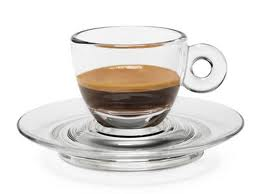
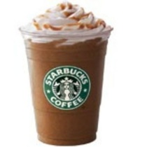

Oppskrifter:
Caffé mocca
- Enkel eller dobbel espresso
- Steamet melk
- Sjokoladesaus, kakao eller sjokoladebiter
- Serveres i glass, kopp eller bolle
Cappuccino
- En eller to espresso
- Fremgangsmåte:
- Fyll opp med blanding av varm melk og melkeskum ca 50/50
- Kaffen danner en mørk ring rundt den hvite ”munkehatten” med melk
Caffè latte
- Enkel eller dobbel espresso
- Fremgangsmåte:
- Fyll opp med steamet melk
- Gjerne 3-4 cm skum på toppen
- Serveres i kopp, glass eller bolle
- Italienernes morgendrikk

Espresso
- Espresso er en kaffedrikk, mer intens og smakfull enn filterkaffe.
- Drikken blir servert i små kopper på ca 3 cl som drikkes raskt og lages ved å presse varmt vann gjennom svært finmalt kaffe under høyt trykk, optimalt sett 9 bar.
- 1 espresso
- ca 6,5 – 7,5 g kaffe pr. kopp (30 – 35 ml)
- Tilberedningstid 22-28 sekunder avhengig av espressoblanding og brenning
- Jevn gyllenbrun crema 3-4 millimeter
- Konsentrert liten kopp mørk kaffe med balansert sødme og bitterhet
Americano
- Enkel eller dobbel espresso i ”vanlig” kaffekopp
- evt. Cappuccinokopp som fylles opp med varmt vann
- ALT: Fyll varmt vann i kaffekoppen, kjør deretter en espresso direkte i koppen. Cremaen vil da gi en vakker overflate og sørge for at kaffen holder på varmen lenge
Café au lait
- 30 – 40 ml fransk brent kaffe
- Fremgangsmåte:
- Fyll opp med steamet/varmet melk
- Serveres i kopp
- Morgendrikken i Frankrike

Frappuccino
- Frappuccino er et registrert varemerke for Starbucks og er navnet på en drikke som lages av blandet isbiter, kaffe og fløte.
- 1/2 kopp fløte
- 1 1/2 kopp melk
- 1 1/2 kopp med isbiter
- 2 kuler vaniljeis
- 1 kopp sterk kaffe
- Sjokoladesaus
- Krem
- Kaffen bør være lunken eller kald, ikke varm. Så blander du sammen alle ingrediensene i en blender. Sjokoladesausen smakes til etter eget ønske.